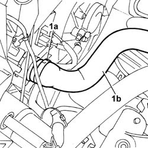
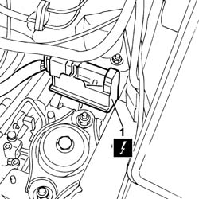
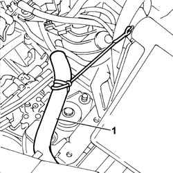
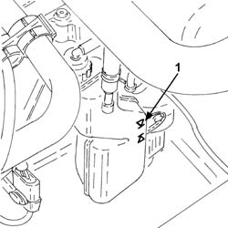

0010T47 hydraulic system fluid for gearbox with hydraulic selection check level and top up if necessary
- Path
- Procedures > 00 MAINTENANCE > 0010 NEW UNITS AND PLANNED MAINTENANCE > 0010T VEHICLE OIL AND FLUIDS > 0010T47 hydraulic system fluid for gearbox with hydraulic selection check level and top up if necessary
- Kind
- repair procedure (removal / refitting; the operation number is the code)
- Applies to
- engines: 1.2 8v; all production periods
- Interactive page
- https://sloeber94.github.io/elrnDB-fPnd/en/#/2752382
Applies to: engines: 1.2 8v; all production periods
Remove the car from the ramps.
5530B56 BATTERY DRIP TRAY COVER - R.R.
5530B52 Battery DRIP TRAY/SUPPORT - R.R.
Position a suitable container to collect the coolant.
1. Open the retaining band (1a) and disconnect the pipe (1b), radiator side.
Move the pipe away from the work area.

Applies to: engines: 1.2 8v; all production periods
1. Disconnect the electrical connection from the braking system control unit.
 | Name | Connector |
|---|---|---|
1 | Braking system control unit | M51 |

Applies to: engines: 1.2 8v; all production periods
1. Move the section of front cable away from the work area.

Applies to: engines: 1.2 8v; all production periods
1. Check that the fluid level corresponds to the MAX notch on the reservoir.

Applies to: engines: 1.2 8v; all production periods
If the level is below the MAX mark, add fluid until the level is correct.
 | Type | Component | Name | Qty. |
|---|---|---|---|---|
- | Fluid [l] | HYDRAULIC GEARBOX HYDRAULIC SYSTEM | TUTELA CAR CS SPEED | 0.7 |
Retighten the plug and check that the breather pipe is correctly fitted on the cap beak.
Refit the front wiring section.
Connect the electrical connection to the braking system control unit.
| Name | Connector |
|---|---|---|
- | Braking system control unit | M51 |
Connect the pipe from radiator to engine, radiator side, and secure it with the retaining band.
0010T21 coolant check density and top up if necessary
0010T48 hydraulic system for gearbox with hydraulic selection bleed air
5530B52 Battery DRIP TRAY/SUPPORT - R.R.
5530B56 BATTERY DRIP TRAY COVER - R.R.
Remove the vehicle from the lift.
Topics linked from this page (5)
- 0010T21 coolant check density and top up if necessary
- 0010T48 hydraulic system for gearbox with hydraulic selection bleed air
- 5530B10 battery - r+r
- 5530B52 Battery DRIP TRAY/SUPPORT - R.R.
- 5530B56 BATTERY DRIP TRAY COVER - R.R.
Topics that link to this page (14)
- 1810A28 clutch - r r for manual gearbox with hydraulic selection versions
- 1820A24 thrust bearing linkage - r + r
- 2110A11 manual gearbox with differential - r r for versions with hydraulic selection
- 2127C12 hydraulic gear selection fluid reservoir - r r
- 2127C18 pipe from hydraulic circuit fluid reservoir to hydraulic speed selection drive pump - r r
- 2127C20 pipe frompump to hydraulic speed selection actuator unit - r r
- 2127C22 pipe from hydraulic speed selection actuator unit to fluid reservoir - r r
- 2127C30 hydraulic speed selection system pump - r r
- 2127C40 hydraulic speed selection hydraulic actuator unit and clutch - r r
- 2127C44 pressure accumulator on hydraulic actuator unit - r r
- 2127C52 EVEN AND UNEVEN GEAR ENGAGEMENT SOLENOID VALVES - R.R.
- 2127C54 GEAR SELECTOR SOLENOID VALVES - R.R .
- 2127C56 CLUTCH SOLENOID VALVE - R.R.
- 2127E50 hydraulic selection gearbox circuit pressure sensor - r r